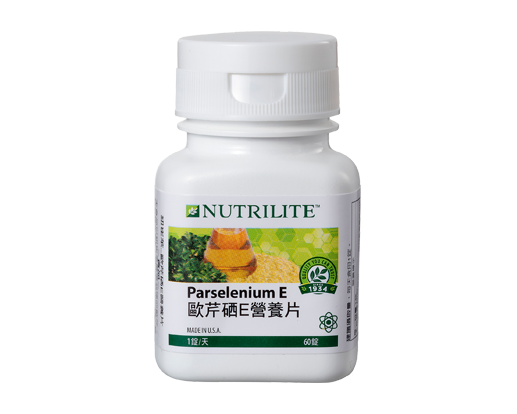

<div class="product_detail_content">
    <div class="picture">
        <div id="owl-demo" class="owl-carousel owl-theme">
            <div class="item"><span class="volume">60錠</span></div>
        </div>
    </div>
    <div class="infomation">
        <h3>歐芹硒E營養片<br><span class="small">抗氧化的好幫手   讓你年輕美麗</span></h3>
        <p>時光匆匆流去，你需要維生素E抗氧化，減少自由基的產生，有助於維持細胞膜的完整性，維持皮膚和血球的活力，加上來自酵母的硒，促進新陳代謝，獨特的配方設計讓你青春洋溢，健康美麗！</p>
        <h4>產品特色</h4>
        <ul class="list_dot">
            <li>完整的維生素 E＋硒抗氧化配方</li>
            <li>提供最有效率的α型維生素E</li>
            <li>每錠結合267毫克α-TE的維生素E及10微克的硒</li>
            <li>添加獨特紐崔萊歐芹蔬果菁華，提供植物營養素</li>
        </ul>
        <!-- <a class="download" href="pdf/products_parselenium_e.pdf" target="_blank">營養成分PDF</a> -->
        <div class="btnWrap">
            <div class="showDetail">營養成分</div>
            <a class="download" href="pdf/products_parselenium_e.pdf" target="_blank">下載PDF</a>
            <a class="buynow" href="https://shop.amway.com.tw/%E7%87%9F%E9%A4%8A%E4%BF%9D%E5%81%A5/%E7%B6%AD%E7%94%9F%E7%B4%A0-%E7%A4%A6%E7%89%A9%E8%B3%AA%E7%B3%BB%E5%88%97/%E6%AD%90%E8%8A%B9%E7%A1%92E%E7%87%9F%E9%A4%8A%E7%89%87/p/2545" target="_blank">立即購買</a>
        </div>
        <div class="detailTable">
            <table class="tableizer-table">
                <thead>
                    <tr class="tableizer-firstrow">
                        <th>重要營養素</th>
                        <th>每錠含</th>
                    </tr>
                </thead>
                <tbody>
                    <tr>
                        <td>維生素E </td>
                        <td>267 毫克α-TE (400 IU)</td>
                    </tr>
                    <tr>
                        <td>硒( 來自酵母)</td>
                        <td>10 微克</td>
                    </tr>
                </tbody>
            </table>
        </div>
    </div>
</div>
